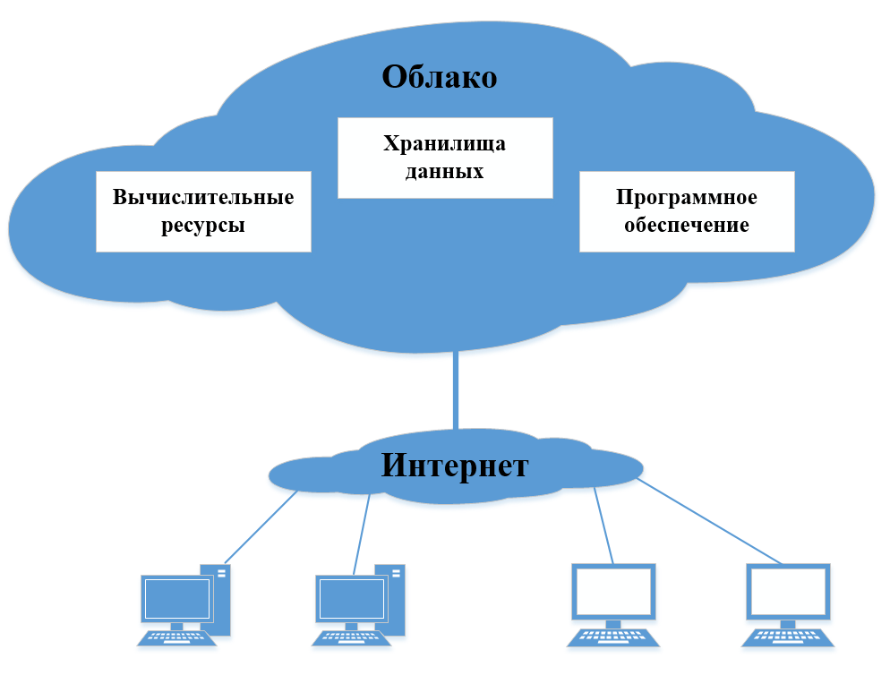
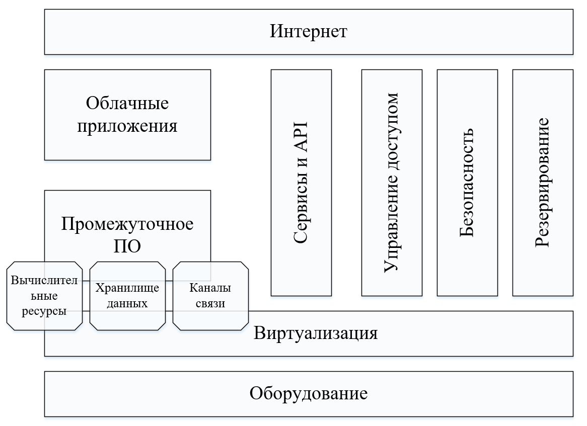

Сурцов Владимир Владимирович
Облачные технологии – это совокупность программных и аппаратных средств осуществляющих удалённое хранение и обработку данных, а также предоставляющих удалённый доступ к таким данным и результатам их обработки.
Облачные вычисления, в информатике — это модель обеспечения повсеместного и удобного сетевого доступа по требованию к общему пулу (pool) конфигурируемых вычислительных ресурсов, которые могут быть оперативно предоставлены и освобождены с минимальными эксплуатационными затратами и/или обращениями к провайдеру.

По мере расширения аудитории интернет-пользователей и активного развития цифрового пространства объёмы обрабатываемой информации стремительно увеличивались. Ставшие привычными традиционные серверные комплексы перестали справляться с задачей оперативного наращивания производительности и эффективного хранения огромных объёмов данных. Дополнительно возникла потребность в перемещении инфраструктуры в крупные специализированные помещения с гарантированным энергоснабжением.
Рост числа цифровых сервисов и сложность их реализации привели к необходимости оптимизации рабочих процессов путем разделения сфер ответственности среди сотрудников и даже разных организаций. К примеру, некоторые работники занимаются поддержкой физической инфраструктуры и предоставляют вычислительные ресурсы другим специалистам, занятым разработкой и эксплуатацией программного обеспечения.
Во избежание технических сбоев, вызванных поломками оборудования или нарушениями связи, необходима резервная инфраструктура (создание избыточности). Однако самостоятельное создание подобной надежной системы для большинства компаний экономически неоправданно. Благодаря облачным технологиям предприятия имеют возможность размещать свои приложения на высоконадежном оборудовании профессиональных поставщиков (облачных провайдеров), обеспечивающих бесперебойную работу и минимизацию риска отказа.
Программное обеспечение часто создается на различных языках программирования, как компилируемых, так и интерпретируемых, причем разрабатывается оно в разные периоды времени. Вследствие этого такое ПО может предъявлять разнообразные требования к версиям библиотек, прикладных программ и даже операционным системам. Применение облачных технологий, таких как виртуализация или контейнеризация, позволяет запускать программы в изолированных средах с разными конфигурациями на единственном физическом сервере.
Увеличение многоядерности и многопоточности центральных процессоров.
Увеличение емкостей носителей информации.
Увеличение пропускной способности сетевых каналов.
Развитие технологий виртуализации и контейнеризации.
Масштабируемое приложение способно выдерживать большую нагрузку за счет увеличения количества одновременно запущенных экземпляров облачных систем. Для одновременного запуска множества экземпляров облачных систем используется типовое оборудование, что снижает общую стоимость владения и упрощает сопровождение инфраструктуры
Решает задачу моментального изменения количества вычислительных ресурсов, выделяемых для работы информационной системы. Эластичность позволяет быстро нарастить мощность инфраструктуры без необходимости проведения начальных инвестиций в оборудование и программное обеспечение
Возможность независимо обслуживать пользователей из разной организации в рамках одного сервиса (одной инсталляции или развертывания). Клиенты не должны видеть данные друг друга
ЦОД поставщика облачных услуг имеет резервные источники питания, охрану, профессиональных работников, регулярное резервирование данных, высокую пропускную способность Интернет-канала, высокую устойчивость к DDOS атакам
Поставщик услуг объединяет ресурсы для обслуживания большого числа потребителей в единый пул для динамического перераспределения мощностей между потребителями в условиях постоянного изменения спроса на мощности. Потребители контролируют только основные параметры услуги (например, объём данных, скорость доступа), но фактическое распределение ресурсов, предоставляемых потребителю, осуществляет поставщик
Предоставляемые вычислительные ресурсы доступны по сети через стандартные механизмы для различных платформ, тонких и толстых клиентов (мобильных телефонов, планшетов, ноутбуков, рабочих станций и других устройств)

Системы хранения данных являются одной из важнейших составляющих облачных систем. Их основная задача — обеспечивать надежную, быструю и эффективную обработку, хранение и передачу большого объема данных.
Данные непосредственно хранятся на физических устройствах, однако доступ к ним пользователи осуществляют преимущественно посредством встроенного либо дополнительного программного обеспечения. Доступ осуществляется в трех основных режимах: блочный, файловый и объектный. Надежность системы обеспечивается благодаря избыточности элементов, включая наличие двух управляющих контроллеров, резервных соединений между компонентами хранилища и многократное копирование информации на разные диски.
Серверы в облачной инфраструктуре представляют собой вычислительные ресурсы. Они обеспечивают выполнение приложений, обработку данных и предоставление сервисов. Эти серверы физически находятся в центрах обработки данных (ЦОД), управляются средствами виртуализации. Также в конструкции серверов используется избыточность для обеспечения отказоустойчивости (несколько блоков питания, сетевых адаптеров, вентиляторов охлаждения и тд.).
Обычно клиенты не имеют прямого доступа к физическим вычислительным ресурсам. Вместо этого они получают доступ к изолированным виртуальным машинам или запущенным приложениям. Однако возможен также вариант предоставления клиенту прямого доступа к физическому серверу («bare metal»), минуя слой виртуализации.
Сетевое оборудование обеспечивает связь различных аппаратных компонентов между собой и являются основой для функционирования виртуальных сетей. Используется как правило оборудование работающее в разных средах передачи данных (по кабелю или оптоволкну), а также с разными протоколами (Ethernet, FC).